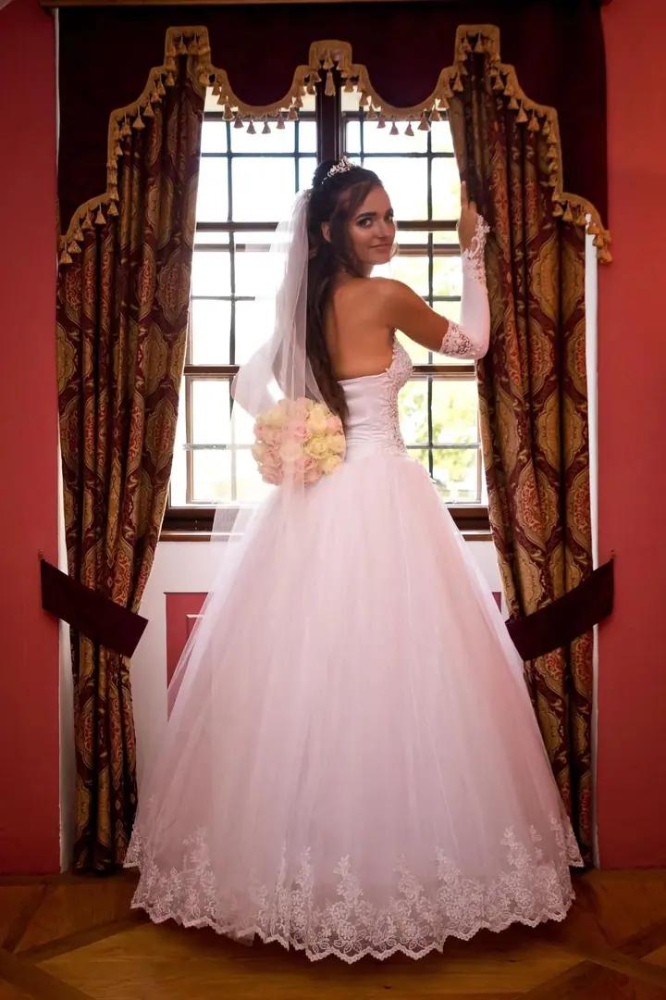
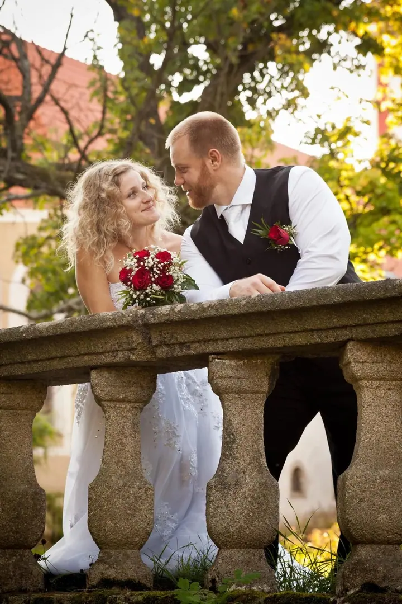
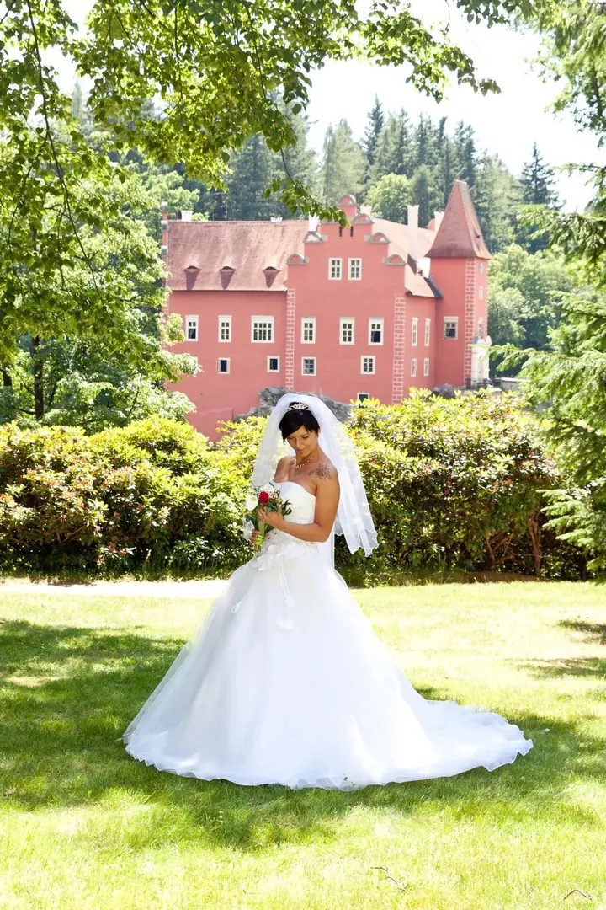
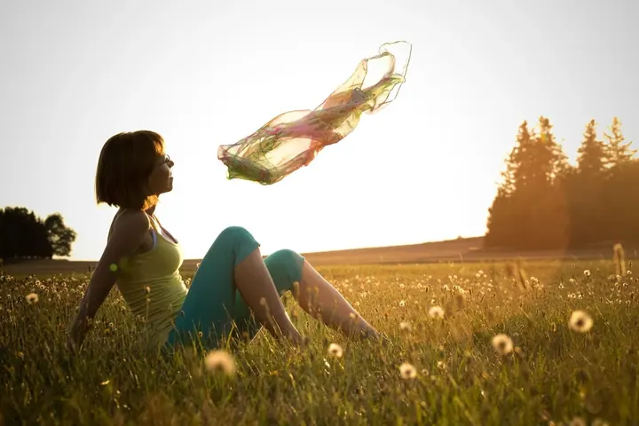

jedna
Svatební fotografie
Fotím celý svatební den od příprav přes obřad a hostinu až po večerní zábavu. Před svatbou se vždy sejdeme a probereme, jak si své fotky představujete.

Svatební a portrétní fotograf · Jindřichův Hradec

Jmenuji se Karel Ille a v Ki-Vi Studiu v Jindřichově Hradci fotím hlavně svatby, ale také portréty a nemovitosti. Zajímají mě emoce a detaily, takže si vaše fotky budete chtít prohlížet i za dlouhá léta.
Více o mně
Co dělám
jedna
Fotím celý svatební den od příprav přes obřad a hostinu až po večerní zábavu. Před svatbou se vždy sejdeme a probereme, jak si své fotky představujete.
dvě
Portréty venku v přírodě i v ateliéru. Fotím i boudoir, těhotenské fotky a děti.
tři
Byty, domy, penziony i provozovny fotím širokoúhlým objektivem v režimu HDR. Připravím i videoprohlídku, 3D prohlídku Matterport a 2D nebo 3D půdorys.
Svůj den můžete mít kromě fotek i na videu. Natáčím svatby a také reklamní videa.
Na svatbě nejsem rušivý prvek, ale přirozená součást dění.

Za objektivem
Svatby fotím rád a záleží mi na tom, aby každá měla svůj příběh. Zajímají mě emoce a detaily, a k tomu se snažím mít i kreativní a umělecký pohled. Fotím celý den od příprav přes obřad a hostinu až po večerní zábavu.
Ještě před svatbou se se snoubenci vždy sejdu. V den svatby už pak na domlouvání drobností není čas ani nálada a já pro vás nejsem cizí člověk s foťákem, ale přirozená součást dne. Ostych zmizí a na fotkách vypadáte uvolněně.
Kromě fotek natáčím i svatební a reklamní video. Pro realitní makléře a majitele nemovitostí dělám fotky, videoprohlídky a 3D prohlídky Matterport. V ateliéru fotím portréty, boudoir, těhotenské fotky i děti.
Karel
Sejdeme se a probereme průběh dne, místa i vaše představy o fotkách. Podle délky focení a lokality může být schůzek i víc.
Pokud chcete, vyfotíme se ještě před svatbou. Fotky se hodí na oznámení, výzdobu hostiny nebo do alba a zároveň si focení vyzkoušíte.
Fotím přípravy, obřad, hostinu i večerní zábavu. Podle zvoleného balíčku jsem s vámi od dvou do deseti hodin.
Upravené fotky dostanete ve skryté webové galerii, kde si můžete objednat tisk, a na USB flashdisku v elegantním bookletu.
Portfolio
Otázky
Svatební focení začíná na 3 900 Kč. Mám balíčky od Mini na 2 hodiny po Exclusive na 10 hodin. Basic stojí 7 990 Kč a obsahuje přes 200 upravených fotografií. Když vám žádný balíček nesedí, připravím nabídku na míru.
Napište mi přes formulář, zavolejte nebo se ozvěte na WhatsApp či Messenger. Termín potvrdíte zálohou 1 000 Kč.
U balíčku Basic je doprava do 50 km od Jindřichova Hradce v ceně. Jinak počítám 7,50 Kč za kilometr.
Ano, natáčím i svatební video. Na schůzce domluvíme, co z vašeho dne chcete mít na fotkách a co na videu.